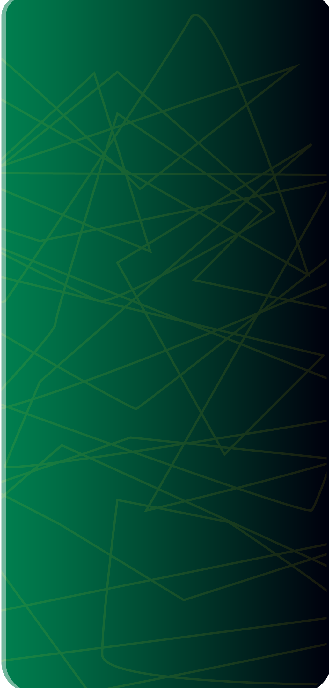

<ion-content>
    <!--  -->
    <h2 text-center>DLAC</h2>
    <h3 text-center>Seguridad para ti</h3>
    <ion-img src="/assets/2.png"></ion-img>
    <ion-button class="botonUsu" expand="round" fill="outline"[routerLink]="['/registro']" routerLinkActive="router-link-active" >Registro</ion-button>
        <ion-button class="botonUsu" expand="round" fill="outline" >Inicio</ion-button>
  
  